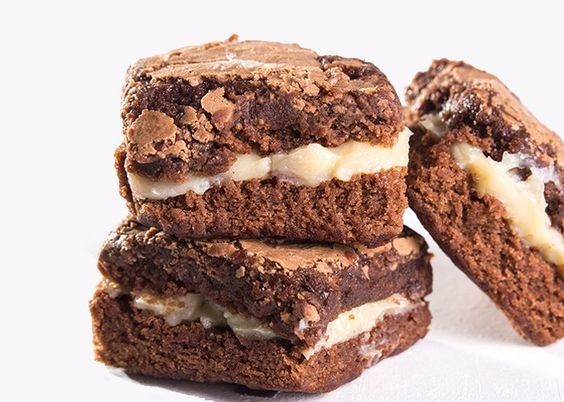

Receita de Brownie Gourmet Recheado
Ingredientes:
- 4 ovos
- 4 colheres (sopa) de margarina
- 1 xícara de farinha de trigo
- 300g de chocolate ao leite
- 1 xícara de açúcar
- 1 lata de leite moça de colher ou brigadeiro (opcional)
Modo de Preparo:
Coloque a margarina e o chocolate em um recipiente de vidro e leve ao microondas de 1 em 1 minuto, sempre mechendo até derreter.
Em uma vasilha separada, coloque o açúcar e os ovos e mexa até ficar homogêneo.
Coloque o chocolate derretido dentro da mistura do ovo com o açúcar e misture bem.
Adicione a farinha de trigo aos poucos enquanto mexe.
Unte uma forma com margarina e polvilhe com trigo.
Coloque a massa na forma e coloque no forno preaquecido à 150°
Deixe no forno de 20 a 30 minutos, cuidando para não queimar.
Tire do forno e espere esfriar.
Assim que esfriar, corte ele em quadrados iguais.
Opcional:
Assim que esfriar, corte ele em quadrados iguais.
Embale se quiser.
